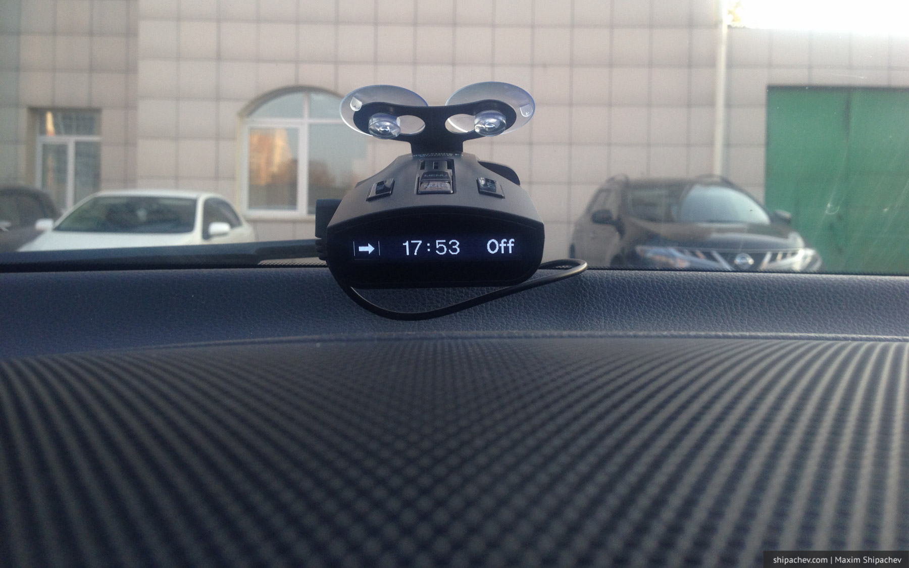

Скоростной лимит я превышаю достаточно редко. Фактическое ограничение в 80 км/ч в черте города и в 110 км/ч за его пределами считаю в основном разумным и достаточным.
Несмотря на это, без радар-детектора в машине чувствую себя неуютно. Не хватает обратной связи.
Езда без радар-детектора — всё равно, что езда с одним закрытым глазом
Предыдущий антирадар, Stinger, проработал у меня с переменным успехом несколько лет. Всё это время он старался предупреждать меня о стационарных радарах, треногах и сотрудниках полиции, которые спрятались во-о-он на том пригорке. Ещё он любил предупреждать меня о раздвижных дверях в магазинах, парктрониках на впередиедущих Audi (почему-то именно Audi) и магнитных бурях. Однажды удивил, когда засёк экипаж ГИБДД аж за 5 километров. Куплен был за 7 лишним тысяч рублей года четыре назад и пару раз действительно выручал. При этом трижды ломался. Дважды у него начинал хрипеть динамик, а в последний раз он просто выключался и больше не включился.
Это случилось, к сожалению, во время нашего путешествия на Кавказ, по дороге туда в Уфе, то есть в самом начале пути. Пришлось ехать вслепую и заплатить за это удовольствие 200 рублей наличными в Калмыкии и 250 уже в Кемерове за штраф, который пришёл с автоматической камеры.
Ремонтировать в третий раз такое барахло мне показалось странным, и я начал присматривать замену.
На рынке сегодня представлены десятки, если не сотни антирадаров. Их все можно разбить на несколько групп:
Типы антирадаров
- недорогие китайские антирадары со случайным как китайский планшет качеством
- обычные антирадары по цене 3–4 тысячи рублей, которые произведены в Корее по заказу российских фирм
- антирадары с GPS, которые стали появляться относительно недавно
- многофункциональные комбайны, которые включают в себя видеорегистратор, антирадар, а иногда ещё и навигацию
Первая группа отсеялась потому что скупой платит дважды.
Со второй — чуть сложнее. В этой группе есть несколько достойных внимания фирм вроде Supra или Sho-me. Корейские радары зарекомендовали себя с лучшей стороны, часто такие радары предполагают русскоязычную поддержку и регулярное обновление ПО.
К комбайнам я отношусь с опаской. Во-первых, в случае поломки, ломается всё. Во-вторых меня настораживает микроволновка, которая болтается на присосках на лобовом стекле.
Я остановил свой выбор на радарах из третьей группы и после недолгого выбора купил последнюю модель антирадара Silverstone F1 Monaco.

Радары Silverstone собирают в Корее и потребители в целом оценивают их достаточно хорошо. Производитель обещает обнаружение радаров типа «Стрелка», «Cordon», «Robot», «Автодория», «Крис», «Арена», «АМАТА», «ЛИСД». Это практически все используемые сегодня российской ГИБДД типы радаров. В Кузбассе, конечно, присутствует только часть из них. Самый распространённый радар в области, думаю, «Крис». А вот, например, грозу автомобилистов «Автодорию» хоть и планировали когда-то устанавливать в Кемерове на терешковском мосту через Томь, но пока просто бессрочно ограничили скорость до 40 км/ч, это проще.
Наличие GPS в антирадаре, как правило, влечёт за собой пару приятных бонусов.
- антирадар с GPS умеет предупреждать о радарах, которые не обнаруживаются с помощью пеленгации. Для этого необходимо периодически обновлять базу радаров с сайта производителя. Кроме непосредственно радаров в базе присутствуют и стационарные посты ДПС, камеры контроля полосы, стоп-линии и обочины.
- антирадар, который «знает» скорость автомобиля более дружелюбен к пользователю. Он, например, может предупреждать водителя о превышении предустановленного лимита скорости, может «молчать», если водитель на нарушает скоростной режим, даже при наличии радара, умеет автоматически переключать режимы в зависимости от скорости.
C радаром Silverstone Monaco F1 я езжу уже больше года. Каждые три месяца обновляю базы радаров. На сайте производителя они обновляются раз в месяц. Процедура обновления проста, правда делать это могу только в офисе — нужен компьютер с Windows.
По-моему, лучший радар на сегодня. Рекомендую.